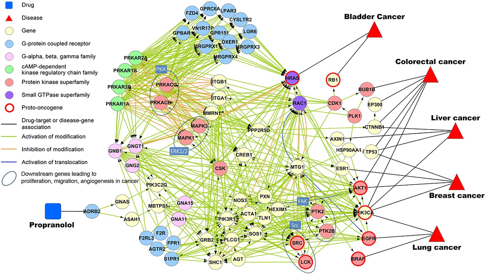

Modern biological systems are inherently relational: proteins interact with one another, genes regulate complex networks of downstream targets, diseases co-occur across shared molecular mechanisms, and cells communicate continuously within tissue microenvironments. Traditional deep learning models, however, are typically designed for data that live in Euclidean spaces, such as sequences (text, genomes) or grids (images). Biological data routinely violate these assumptions.
This week in my Deep Learning in Biology overview series, we dive into a key solution to this challenge: Graph Neural Networks (GNNs). GNNs provide a powerful framework for modeling interactions, dependencies, and structure in such complex systems. By operating directly on graphs, GNNs allow us to reason about relationships rather than isolated observations. In this post, we will explore the foundations of graph-structured data, the challenges inherent to learning from graphs, and the architectural components that make GNNs effective across biology and medicine.
Understanding Graph-Structured Data
Biological systems are rarely composed of independent entities. Instead, interconnected components influence one another, often across long ranges and multiple scales. Graphs offer a flexible and expressive language for representing these systems. A graph consists of two fundamental components:
Nodes, which represent entities such as genes, proteins, cells, drugs, diseases, or patients.
Edges, which represent relationships or interactions between entities, such as protein–protein interactions, gene regulation, cell–cell communication, chemical binding, or patient similarity.
By explicitly modeling these relationships, graphs enable us to uncover structure and dependencies that are difficult to capture with grid-based models. This makes graph-based representations particularly well suited for biological and biomedical data.

Handling Challenges in Graph Learning
Graph-structured data introduce a variety of unique problems for machine learning - they are often large, irregular, dynamic, sparse, and non-Euclidean. In the following section, we’ll see how modern GNN architectures are specifically designed to address these challenges.
Scalability and Computational Inefficiency
Large biological graphs can contain millions of nodes and edges. Naively applying message passing across such graphs can require O(n²) operations or worse, quickly exceeding practical memory and compute limits. Several strategies are commonly used to make GNNs scalable:
Node and edge sampling reduces computation by considering only a subset of the graph during training. Rather than propagating messages across the entire graph, the model processes smaller induced subgraphs.
Importance sampling further improves efficiency by prioritizing biologically or structurally important nodes and edges, such as hubs or highly connected regions.
Layer-wise neighbor sampling, popularized by GraphSAGE, limits the number of neighbors aggregated at each layer. This prevents the exponential growth of neighborhoods with depth, a phenomenon often referred to as neighbor explosion.
Distributed GNN frameworks, such as Deep Graph Library (DGL) and PyTorch Geometric, enable multi-GPU and distributed training, allowing large graphs to be partitioned and processed efficiently.
Together, these techniques transform GNNs from theoretical models into tools that can scale to real-world biological networks.
Irregular and Dynamic Graphs
Unlike images or sequences, graphs have no fixed structure. Nodes can have widely varying numbers of neighbors, and biological graphs often change over time. Examples include longitudinal patient networks, evolving gene regulatory interactions, and time-dependent cell–cell communication graphs. To model such behavior, researchers have developed architectures that explicitly handle irregularity and temporal dynamics:
Temporal Graph Networks (TGNs) update node representations as events occur, allowing embeddings to evolve continuously over time.
Graph Attention Networks (GATs) assign learnable importance weights to neighboring nodes, enabling the model to focus on the most relevant interactions rather than treating all neighbors equally.
Dynamic GNNs incorporate time-dependent edges and nodes, making them well suited for modeling evolving biological systems.
These approaches better reflect the non-static nature of biological data.
Data Sparsity and Missing Values
Biological graphs are almost never complete. Sparsity and missingness can significantly degrade model performance. Several techniques can help GNNs learn meaningful representations even when data are incomplete:
Graph Autoencoders (GAEs) (see the Graph Representation Learning section below) learn latent node embeddings by reconstructing the adjacency matrix, effectively predicting missing edges.
Self-supervised learning leverages unlabeled data by creating proxy tasks such as masked node prediction or contrastive learning, reducing reliance on curated labels.
Graph data augmentation introduces stochastic perturbations (e.g. edge dropout or subgraph sampling) to improve generalization and robustness.
Non-Euclidean Structure
Graphs do not live on regular grids, and distances are often topological rather than geometric. As a result, traditional convolutional operations must be redefined. Common approaches include:
Spectral GNNs, which define convolutions in the graph Fourier domain using the eigen-decomposition of the graph Laplacian.
Spatial GNNs, which aggregate information directly from local neighborhoods and form the basis of most modern architectures.
Hyperbolic GNNs, which embed graphs in hyperbolic space, making them particularly effective for modeling hierarchical biological structures such as ontologies and phylogenetic trees.
Learning Meaningful Representations
Biological graphs often exhibit long-range dependencies, heterogeneous node and edge types, and limited labeled data. Learning representations that capture these complexities is nontrivial. Solutions include:
Foundational architectures such as GCNs, GATs, and GraphSAGE.
Jumping Knowledge Networks, which combine representations from multiple layers to mitigate over-smoothing.
Higher-order and heterogeneous GNNs, which explicitly model multiple node and edge types.
Meta-path-based methods, commonly used in biomedical knowledge graphs.
Self- and semi-supervised learning, which are essential in low-label regimes.
Graph Representation Learning
Graph representation learning maps nodes, edges, or entire graphs into continuous vector embeddings that preserve structural and semantic information. These embeddings eliminate the need for manual feature engineering and enable downstream tasks such as node classification, link prediction, and graph clustering.
Matrix Factorization
Early approaches, such as Laplacian Eigenmaps and HOPE, rely on matrix factorization of graph-derived matrices. While mathematically elegant, these methods scale poorly and are limited in expressiveness.
Random Walk-based Embeddings
Methods like DeepWalk and node2vec generate random walks through the graph and treat them as sentences, applying ideas from word embeddings. Nodes that frequently co-occur in walks are embedded nearby. Parameters such as walk length and sampling bias allow the model to trade off between local (BFS-like) and global (DFS-like) structure.
Deep Learning-based Embeddings
From a deep learning perspective, Graph Autoencoders follow an encoder–decoder framework. A GNN-based encoder maps nodes to latent embeddings, while a decoder reconstructs graph properties such as adjacency via inner-product similarity. Training typically minimizes binary cross-entropy over observed edges. Dimensionality reduction techniques like t-SNE are often applied to visualize learned embeddings.

Core GNN Architecture Components
Most GNNs can be decomposed into three conceptual modules:
Sampling Modules address scalability by limiting the size of neighborhoods during training through node, layer-wise, or subgraph sampling.
Propagation Modules perform message passing, using convolutional aggregation, recurrent updates, and skip connections to integrate information across the graph.
Pooling Modules generate graph-level representations for tasks such as graph classification. These include readout pooling (sum or mean) and hierarchical pooling methods like Top-K pooling, DiffPool, or attention-based pooling, all of which must preserve permutation invariance.
Training GNNs
GNNs can be trained under different supervision regimes:
Supervised learning, using node, edge, or graph labels.
Semi-supervised learning, where labels propagate through the graph structure.
Unsupervised learning, relying on contrastive objectives or reconstruction losses.
Corresponding prediction tasks include node-level, edge-level, and graph-level inference.
GNN Architecture Families
Spatial GNNs operate directly on neighborhoods and include Message Passing Networks, Graph Attention Networks, GraphSAGE, and Graph Isomorphism Networks.
Spectral GNNs rely on graph Laplacian eigendecomposition and include models such as GCNs and ChebNet.
Model performance is commonly evaluated using metrics like accuracy and AUC, while visualization techniques such as t-SNE can provide qualitative insight into embedding structure.
Conclusion
Graph Neural Networks have become indispensable for modeling the relational structure inherent in biological systems. By combining ideas from deep learning, signal processing, and network science, GNNs enable us to move beyond isolated observations and reason directly about interactions. As biological datasets continue to grow in scale, heterogeneity, and temporal complexity, GNNs will play an increasingly central role in extracting structure and driving biological discovery.